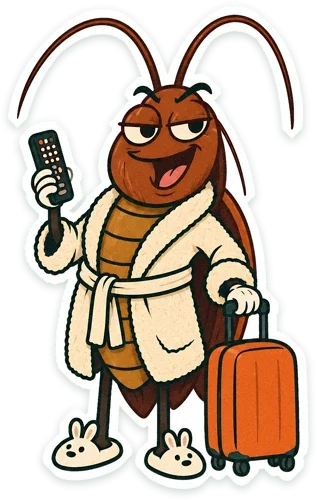

Bucaramanga y el Área Metropolitana tienen un clima tropical con temperaturas entre 22 °C y 28 °C durante todo el año y niveles de humedad que superan el 70 % en temporada de lluvias. Estas condiciones son ideales para la reproducción de cucarachas. Si está viendo cucarachas en su hogar o negocio, no es casualidad — es el resultado de un entorno que las favorece activamente.
En esta guía le explicamos por qué aparecen, qué tipos son comunes en la ciudad, por qué los remedios caseros no funcionan a largo plazo, y cuándo es momento de llamar a un profesional. Si ya vio una cucaracha y quiere entender la situación, le recomendamos también leer nuestra guía sobre qué hacer cuando ve una cucaracha en su casa.
¿Por Qué Bucaramanga Tiene Tantas Cucarachas?
Bucaramanga es, en términos entomológicos, un paraíso para las cucarachas. La temperatura nunca baja lo suficiente como para matar colonias o frenar su reproducción. Mientras que en ciudades con inviernos fríos las poblaciones de cucarachas se reducen naturalmente cada año, en Bucaramanga las colonias permanecen activas los 365 días. Esto significa que sin intervención profesional, una colonia solo crece — nunca se reduce sola.
La humedad constante del Área Metropolitana es otro factor determinante. Las cucarachas necesitan agua para sobrevivir, y en una ciudad donde las lluvias son frecuentes y la humedad relativa rara vez baja del 60 %, el suministro de agua está garantizado. Sifones, desagües, tuberías con condensación, y cualquier acumulación de agua se convierten en puntos de hidratación para las colonias. La temporada de lluvias en Bucaramanga agrava especialmente esta situación.
La infraestructura urbana también contribuye: alcantarillado antiguo en zonas como el centro de Bucaramanga y barrios tradicionales de Floridablanca, alta densidad de restaurantes y comercios de alimentos en zonas como Cabecera y la Carrera 33, y la proximidad de zonas residenciales a mercados y plazas. Estas condiciones se comparten en todo el Área Metropolitana: Bucaramanga, Floridablanca, Piedecuesta y Girón enfrentan los mismos desafíos.
Tipos de Cucarachas Comunes en Bucaramanga
Cucaracha Alemana (Blattella germanica): Es la especie más común en cocinas y baños de Bucaramanga. Pequeña (aproximadamente 1,5 cm), color café claro, con dos franjas oscuras detrás de la cabeza. Se reproduce a una velocidad alarmante: una sola hembra puede producir hasta 300 crías durante su vida. Prefiere ambientes interiores cálidos y húmedos, y es la plaga número uno en restaurantes y negocios de alimentos. Se esconde detrás de la nevera, dentro del motor de electrodomésticos, debajo del lavaplatos y en marcos de puertas.
Cucaracha Americana (Periplaneta americana): Más grande (3-5 cm), color rojizo-marrón. Se encuentra comúnmente en alcantarillas, sótanos y exteriores. Vuela en climas cálidos, lo cual es frecuente en Bucaramanga y genera alarma entre los residentes. Entra a las viviendas por desagües, grietas bajo las puertas y tuberías. Es menos prolífica que la alemana pero más visible y suele ser la que genera el primer aviso de que hay un problema.
Cucaracha de banda marrón (Supella longipalpa): Menos común en Bucaramanga, pero presente. A diferencia de las anteriores, prefiere zonas secas y cálidas como closets, detrás de cuadros, dentro de muebles de dormitorios, y en cajas de cartón almacenadas. No requiere tanta humedad como las otras especies, lo que la hace más difícil de detectar porque no se concentra en cocinas y baños.
Por Qué los Remedios Caseros No Funcionan a Largo Plazo
Los insecticidas de supermercado (spray) solo matan las cucarachas que están expuestas en el momento de la aplicación. No eliminan los huevos (ootecas), que están protegidos por una cápsula resistente. No alcanzan las colonias escondidas detrás de paredes, dentro de electrodomésticos y en espacios inaccesibles. Y lo más preocupante: crean resistencia. Las cucarachas alemanas en particular han desarrollado resistencia a los piretroides comunes que contienen la mayoría de productos domésticos en Colombia.
Las trampas adhesivas de supermercado capturan individuos sueltos pero no controlan la población. Si tiene una colonia de 200 cucarachas detrás de la nevera y una trampa captura 5, la colonia sigue intacta y reproduciéndose.
Dato importante: Si ve 1 cucaracha durante el día, se estima que puede haber entre 100 y 200 más ocultas en su propiedad. Las cucarachas son nocturnas — verlas de día indica que la población es tan grande que algunas son empujadas fuera de sus escondites por falta de espacio.
Cómo Funciona el Control Profesional de Cucarachas
En AGROINCOL utilizamos un protocolo de Manejo Integrado de Plagas (MIP) que va mucho más allá de un simple spray. Nuestro enfoque, respaldado por más de 40 años de experiencia en el Área Metropolitana de Bucaramanga, combina múltiples técnicas para eliminar la colonia completa y prevenir la reinfestación.
1. Inspección diagnóstica: Nuestro técnico identifica la especie de cucaracha presente, el nivel de infestación y los puntos críticos de la propiedad: detrás de la nevera, debajo del lavaplatos, dentro de marcos de puertas, sifones, grietas en paredes, y cualquier acumulación de humedad. Esta inspección determina el tratamiento más efectivo.
2. Tratamiento con gel cucarachicida: A diferencia del spray, el gel es un cebo que la cucaracha consume y lleva a la colonia. Cuando muere, las demás cucarachas se alimentan del cadáver (son caníbales) y también consumen el producto. Este efecto cascada elimina la colonia completa, incluyendo las cucarachas que nunca fueron alcanzadas directamente. Es el tratamiento más efectivo contra la cucaracha alemana.
3. Aspersión perimetral: Producto certificado por INVIMA aplicado en perímetros, grietas y accesos como barrera de protección. Impide el ingreso de nuevos individuos desde el exterior o desde propiedades vecinas.
4. Sellado y recomendaciones: Identificamos puntos de entrada y recomendamos sellado con silicona. Entregamos consejos de prevención específicos para las condiciones de su propiedad.
5. Seguimiento: Verificamos la efectividad del tratamiento a las 2 semanas. En programas recurrentes, realizamos monitoreo continuo con trampas de detección. Todos los productos que utilizamos están registrados ante el ICA y certificados por INVIMA. Son seguros para familias con niños y mascotas, y no generan olores fuertes ni residuos tóxicos.
Cuándo es Momento de Llamar a un Profesional
Estas son las señales claras de que necesita control profesional de cucarachas:
- •Ve cucarachas durante el día (indica una población grande)
- •Encuentra excrementos (puntos negros pequeños) en cajones, gabinetes o esquinas
- •Detecta ootecas: cápsulas de huevos ovaladas, color marrón oscuro, de 5-8 mm
- •Los productos de supermercado dejaron de funcionar (resistencia)
- •Tiene un restaurante o negocio de alimentos y necesita certificación INVIMA
- •Ve cucarachas después de haber fumigado recientemente con productos caseros
Prevención: Cómo Evitar que las Cucarachas Regresen
Después del tratamiento profesional, estas prácticas ayudan a mantener su propiedad libre de cucarachas: no dejar comida expuesta ni platos sucios durante la noche, sellar la basura herméticamente y sacarla diariamente, reparar goteras y fugas (las cucarachas necesitan agua para sobrevivir), sellar grietas y espacios debajo de puertas con silicona o burletes, limpiar periódicamente detrás de la nevera y debajo de la estufa, no acumular cartón ni papel periódico (las cucarachas usan la celulosa como alimento), y revisar sifones y desagües (colocar rejillas).
Importante: En Bucaramanga, la prevención es especialmente crítica porque el clima nunca "mata" las cucarachas como en ciudades con inviernos fríos. Sin un programa de control profesional, la reinfestación es cuestión de semanas, no de meses.
Preguntas Frecuentes sobre Cucarachas en Bucaramanga
¿Cuánto cuesta eliminar cucarachas en Bucaramanga?
El costo depende del tamaño de la propiedad, el nivel de infestación y el alcance del tratamiento: no es lo mismo tratar un espacio específico que hacer un tratamiento integral de toda la vivienda. Para restaurantes se recomienda un programa de control continuo. La cotización es gratis y se entrega el mismo día. Vea cómo cotizamos.
¿El tratamiento profesional es seguro para niños y mascotas?
Sí. En AGROINCOL utilizamos productos certificados por INVIMA y registrados ante el ICA que son seguros para familias con niños y mascotas. El gel cucarachicida se aplica en puntos estratégicos inaccesibles para niños y animales. No genera olores fuertes ni residuos tóxicos.
¿Cuánto tiempo toma ver resultados después de la fumigación?
Con el tratamiento de gel + aspersión, la mayoría de clientes reportan una reducción drástica de cucarachas en las primeras 48-72 horas. La eliminación completa de la colonia puede tomar entre 1 y 2 semanas, ya que el gel tiene efecto cascada — las cucarachas lo llevan al nido y eliminan incluso las que no fueron alcanzadas directamente.
¿Cada cuánto debo fumigar para cucarachas?
Para hogares con historial de cucarachas en Bucaramanga, recomendamos control profesional cada 2-3 meses como medida preventiva. Para restaurantes, la frecuencia mínima recomendada es trimestral según la normativa colombiana, pero lo ideal es bimestral o mensual. Use nuestra calculadora gratuita para determinar la frecuencia ideal para su propiedad.
¿Tiene cucarachas en su hogar o negocio en Bucaramanga? Contáctenos para una inspección diagnóstica sin costo. Más de 40 años protegiendo hogares, restaurantes e industrias en el Área Metropolitana de Bucaramanga con productos certificados INVIMA.

Llegó AGROINCOL. Nos vamos.